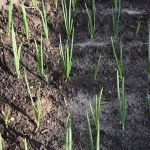

파
파는 백합과(Liliaceae)의 파속(Allium)에 속하는 식물로, 학명은 Allium fistulosum L.이다. 속명인 Allium의 어원에는 여러가지 설이 있으나 Olere(냄새), halium(강한 냄새가 나는 것)에 기인하거나 혹은 켈트어의 all(태우는 것 같은, 매운)에서 온 것이라고도 일컬어지고 있다. 종명인 fistulosum은 “관상(管狀)의”이 라고 하는 의미로 잎의 형태에서 붙여진 것이다. 영명으로는 Welsh onion, Spring onion, Green onion 등이 쓰이며, 독일명은 Winterzwiebel, Rohrenlauch, 프랑스어 로는 Oigron de Strasbourg가 사용되고 있으며 중국명은 총(蔥)이다. 파는 한약재로서도 쓰이는데 생약명으로 총백, 총실(총자), 총엽, 총화, 총수, 총즙 등의 용어가 사용되고 있다.
파의 잎은 5∼8일마다 하위의 잎부터 상위의 잎으로 차례차례 규칙적으로 출엽하며 출엽 후 15∼ 20일간은 생장을 계속하고 그 사이에 먼저 나온 잎의 초장을 추월하면서 최대엽장에 달하게 된다. 잎의 신장이 정지하고 7∼10일이 경과하면 잎의 선단부부터 마르기 시작하여 점차로 녹색부는 짧아지게 되며 이어서 잎 전체가 고사한다. 잎 1매의 수명은 엽령, 영양, 온도 등의 외적 조건에 따라서 차이가 있지만 생존기간은 대개 출엽 후 30∼40일 정도이다.
엽초부는 북주기(배토작업)를 하지 않으면 짧고 녹색으로 남아 있지만 북주기에 의하여 새로 나오는 잎의 엽초부가 길게 되고 연백되어서 굵고 긴 백경부를 형성한다. 파의 종자는 광택이 없는 흑색으로 길이는 2.5∼3.5mm, 폭은 1.5∼2.5mm, 두께는 1.0∼1.3mm 정도로 충실한 종자는 1ℓ당 400g 이상이며, 1,000립중은 2.5g 이상이다. 뿌리의 발육을 살펴보면, 지하경의 하반부로부터 직경 1∼1.5mm의 1차근이 다수 밀생하나 파의 뿌리는 천근성으로 대부분이 지하 30cm 작토층에 횡으로 분포한다. 줄기는 지하경의 일종인 단축경으로 엽초부에 둘러싸여 있으므로 어린포기에서는 엽초를 해부하지 않으면 줄기가 보이지 않는다. 엽초가 단축경에 부착되는 부분이 마디이나 마디와 마디는 보통 동심원상으로 밀착되어 있다. 생장점을 그 최내부에 있어 좌우 서로 어긋나게 새엽을 계속하여 분화시키므로 단축경은 약간씩 윗부분으로 신장한다. 또 하부의 오래된 잎은 점차 고사하여 외측으로부터 떨어져 나가기 때문에 묵은 줄기는 줄기 부분이 노출되어 2∼3cm에 달하는데 이것을 근경(rhizome)이라 한다. 1년생과 2년생 파는 근경의 유무로 구별이 된다.
화경은 봄에 잎사이로부터 신장하여 잎과 마찬가지로 속이 빈 원주상을 나타낸다. 그 선단에 화구(花球)를 형성한다. 화구는 소경(小梗)을 가진 백색의 소화가 다수 총생한 것으로 어릴 적에는 얇은 포엽으로 둘러싸여 있으나 개화시에는 포엽은 떨어져 나간다. 꽃은 수술 6개, 암술 1개로 이루어져 있는데 자방은 3실이며 암술이 수술보다 먼저 성숙하는 경향이 있다. 1실에는 2개의 배주가 형성되어 1꽃에서 6개의 종자가 형성된다.
출처 본문 : 농사로 이미지: 구글 이미지
Table(s)
| 작형 | 파종기 | 정식기 | 수확기 | 주재배지역 |
|---|---|---|---|---|
| 춘파재배 | 3월~4월 | 5월~6월 | 10월~익4월 | 부산,진도,영광,해남 등 |
| 추파재배 | 5월~6월 | 8월~9월 | 4월~5월 | 정읍,부안 등 |